The Smartest Animals on Earth (and a Few Surprising Bonus Picks!)
When we think of intelligence, our minds often jump to humans complex language, technology, and self-awareness. But intelligence isn't just a human trait. Across the animal kingdom, species have evolved extraordinary brains, behaviors, and problem-solving strategies tailored to their environment. So, how do we measure animal intelligence, and which species stand out as the sharpest minds in the wild? Let’s dive into the fascinating world of animal cognition and explore the brilliant creatures that rank among the world’s most intelligent.
How Do We Measure Animal Intelligence?
Measuring smarts in animals is not as straightforward as it may seem. Intelligence manifests in many forms memory, social skills, adaptability, tool use, communication, and even emotional awareness. Unlike humans, animals don’t take IQ tests. Instead, scientists observe behavior, study brain structures, and evaluate how these creatures interact with their environments.
1. Chimpanzee
Often called our closest cousin, chimpanzees share almost 99% of our DNA. These primates are toolmakers, social strategists, and emotionally intelligent beings. They’ve been seen using sticks to catch termites, learning sign language, and recognizing themselves in mirrors a rare trait even among advanced mammals.
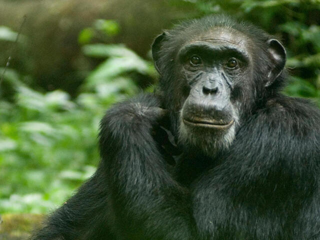
2. Orangutan
Don’t be fooled by their laid-back demeanor orangutans are jungle engineers. These red-haired apes craft tools, build shelters, and learn through observation. They also show planning skills, which points to high cognitive capacity, especially in solitary environments where adaptability is key.

3. Bonobo
The peace-loving cousin of the chimpanzee, bonobos are emotional geniuses. They excel in empathy, conflict resolution, and cooperation. Studies show bonobos can understand intentions and exhibit theory of mind realizing what others are thinking or feeling.
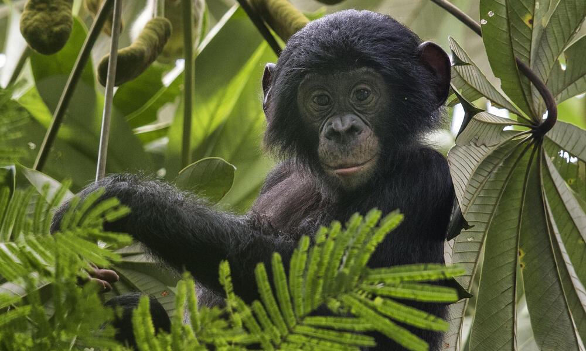
4. Dolphin
With complex communication, self-awareness, and social bonds, dolphins rank among the most intelligent marine animals. They use echolocation, can recognize themselves in mirrors, and even understand symbolic language systems. Some researchers argue they may rival primates in cognitive ability.
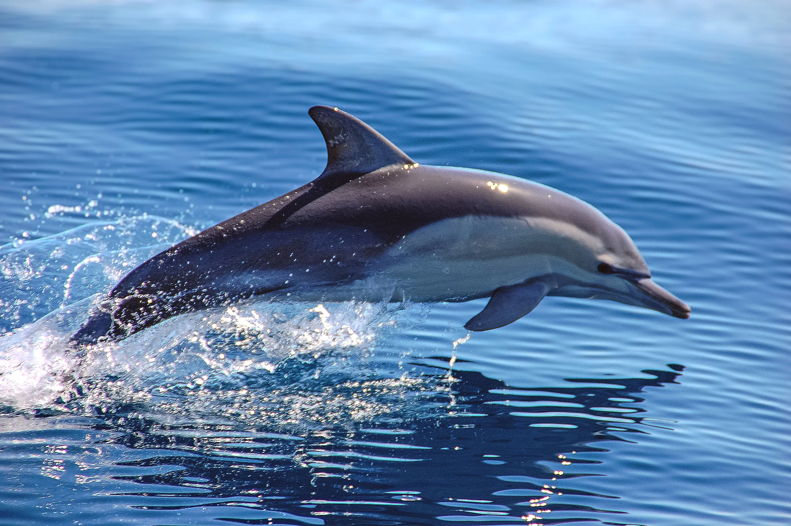
5. Elephant
Famous for their memory, elephants are also known for their emotions, grief rituals, and social intelligence. Matriarch-led herds, long-distance migration knowledge, and mourning of the dead all suggest deep cognitive and emotional processing.
6. Corvids: Crows, Ravens & Magpies
These birds are some of nature’s best problem-solvers. Crows use tools, remember human faces, and even plan for the future. Magpies have passed the mirror test, while ravens play and trick others clear signs of awareness and strategic thinking.
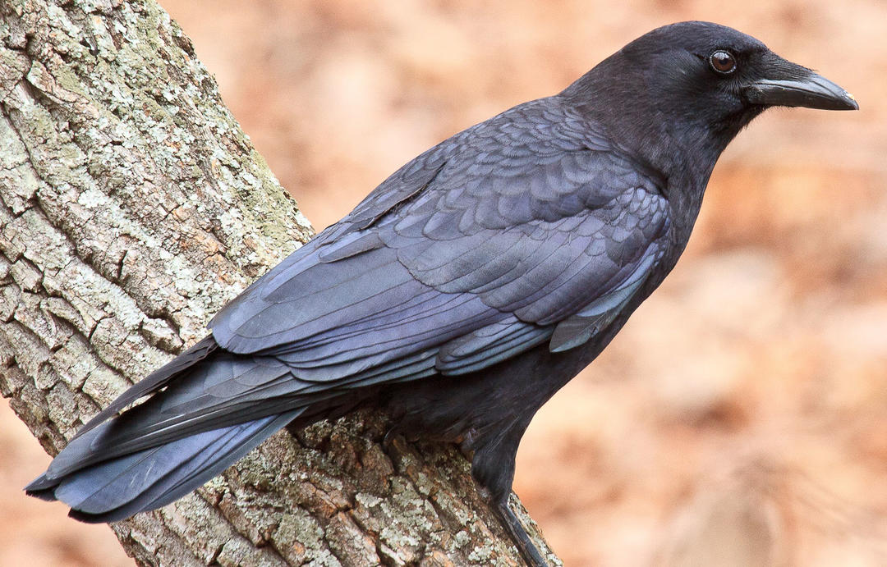
7. Gorilla
Gorillas might be gentle giants, but don’t underestimate their minds. Known to use tools and learn sign language, they also express grief, humor, and affection. While less curious than chimps, they are thoughtful and emotionally intelligent.
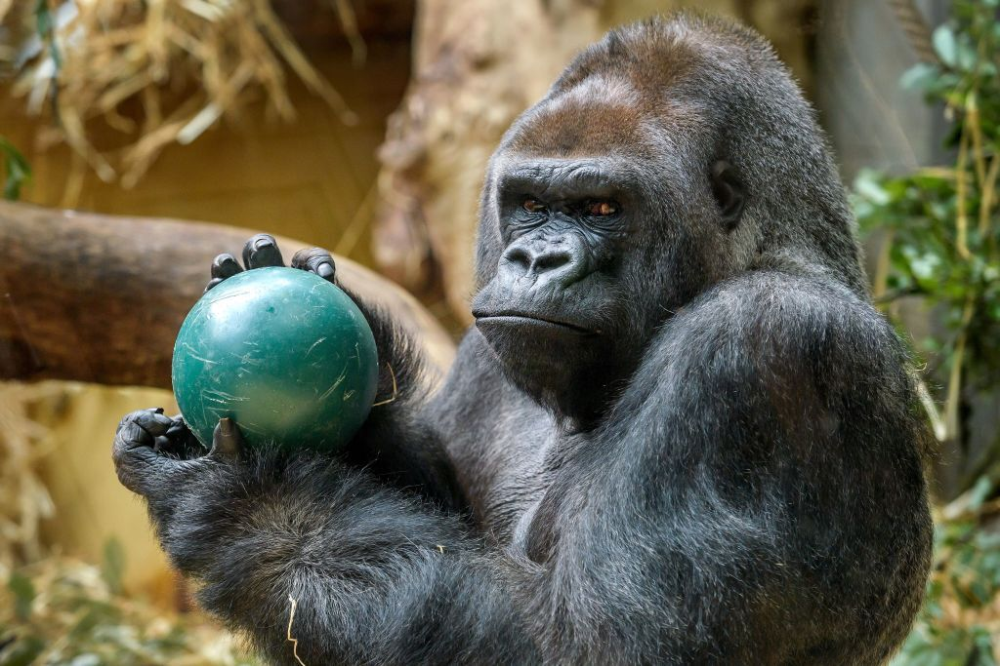
8. Orca (Killer Whale)
These ocean giants live in tight family groups and develop unique hunting tactics passed down across generations—signs of cultural learning. Orcas exhibit teamwork, dialects between pods, and complex emotional connections.
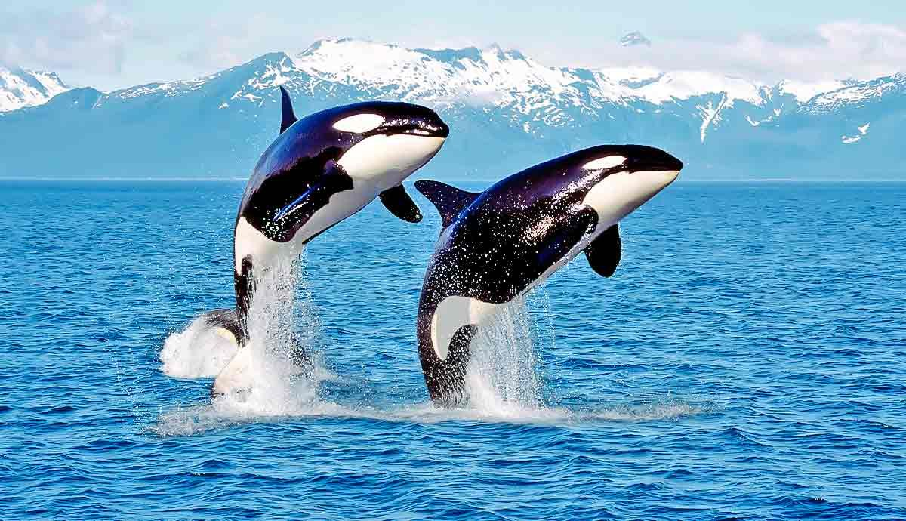
9. African Grey Parrot
Talk about talkative and intelligent! African greys like the famous Alex could label colors, count, and express feelings. Their cognitive and verbal skills rival those of young children,Talk about talkative and intelligent! African greys like the famous Alex could label colors, count, and express feelings. Their cognitive and verbal skills rival those of young children, reshaping how we think about bird intelligence, reshaping how we think about bird intelligence.
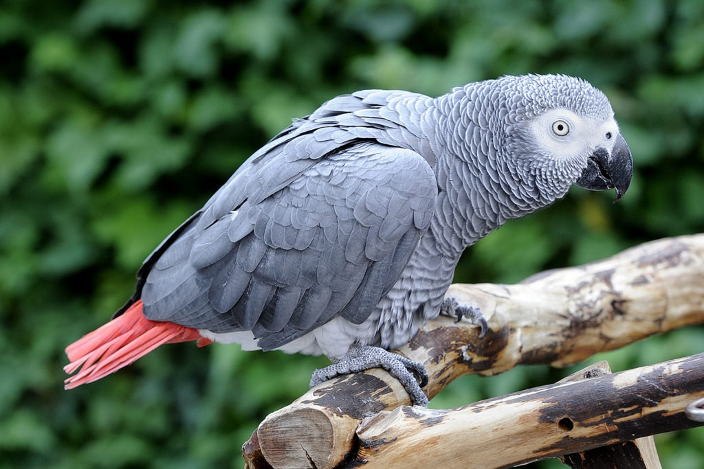
10. Dogs, Wolves, Foxes & Coyotes
Canines are masters of social intelligence. Dogs in particular have evolved alongside humans, reading our emotions and body language like no other animal. Wolves display leadership and coordination, while foxes and coyotes excel in adaptability and cunning.
11. Pig
Surprise! Pigs are brainy animals capable of learning video games, recognizing themselves in mirrors, and showing empathy. Their cognitive skills exceed many pets, and their curiosity rivals that of primates.
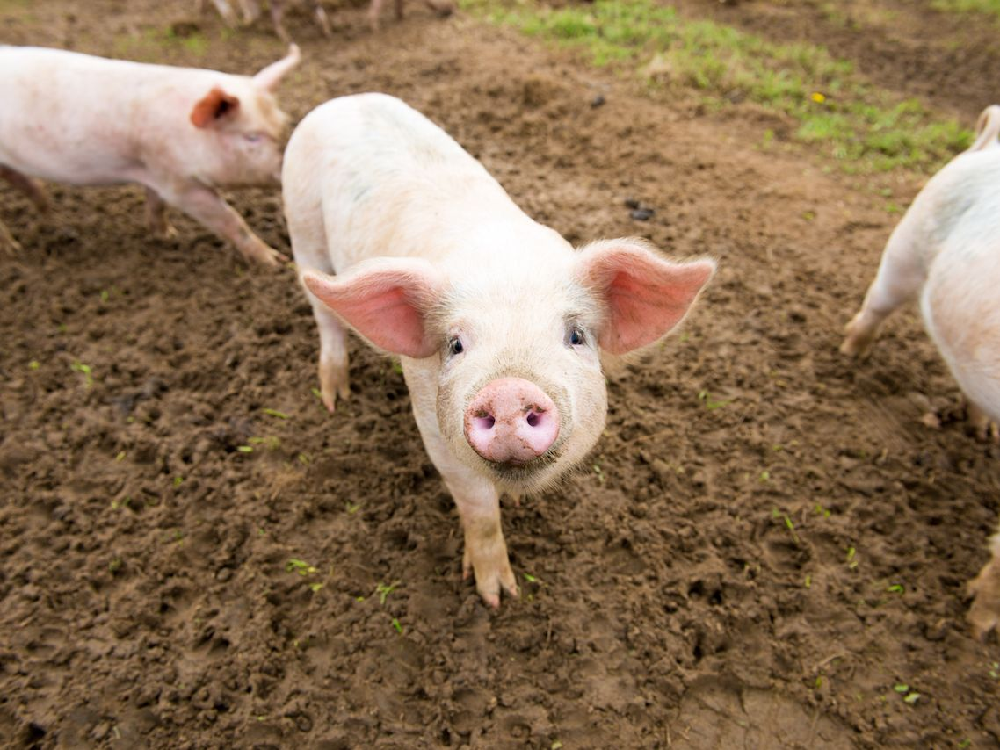
12. Cat
Feline intelligence is subtle but potent. Cats excel at observational learning, memory, and navigating complex environments. Their independence masks their analytical skills, particularly when it comes to problem-solving and survival.
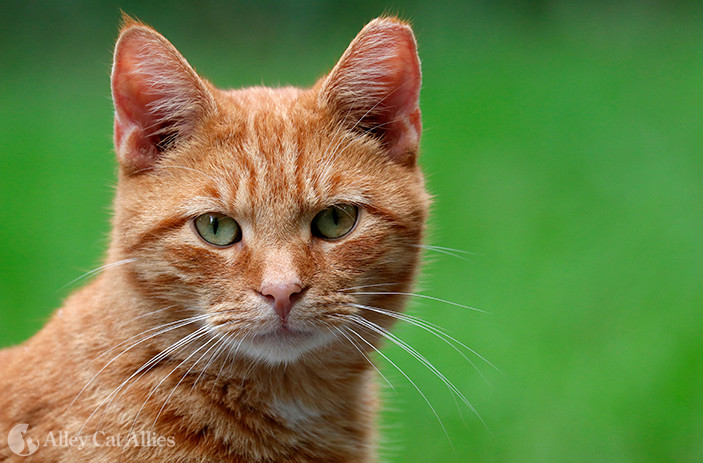
13. Octopus
Octopuses are the Houdinis of the sea. These cephalopods can escape enclosures, open jars, and solve mazes. With decentralized brains and incredible adaptability, they represent a whole different kind of alien-like intelligence.
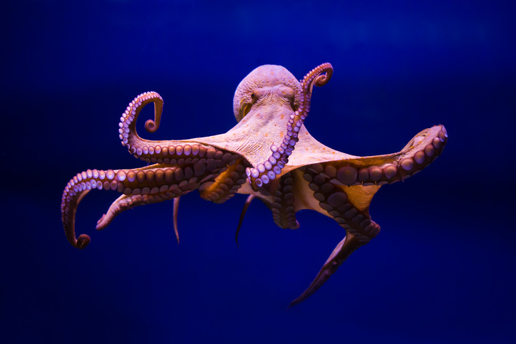
14. Cuttlefish
Masters of disguise, cuttlefish use color changes to communicate and evade threats. Their ability to learn, remember, and make decisions rivals that of some vertebrates, despite being invertebrates themselves.
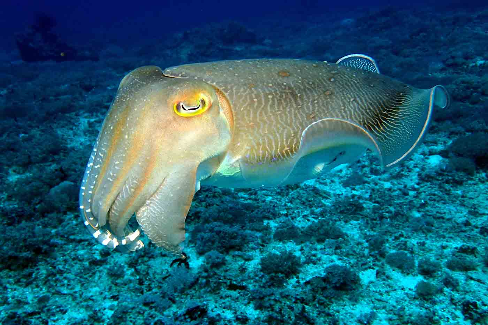
15. Squirrel
You might think they’re just cute tree-hoppers, but squirrels display excellent memory and deception. They remember hundreds of food hiding spots and even create decoys to mislead rivals an impressive level of strategic thinking.

Bonus: Rat
Often misunderstood, rats are smart, social, and emotionally aware. They ace mazes, learn from each other, and adapt quickly to new challenges. Studies have even shown that rats show signs of empathy a trait once believed to be uniquely human. Animal intelligence isn’t a ladder with humans at the top it’s a tapestry. Each species has developed its own unique set of skills to survive and thrive. Whether it's a chimp using tools, a dolphin navigating with sonar, or a parrot mastering language, intelligence in the animal world comes in many forms.